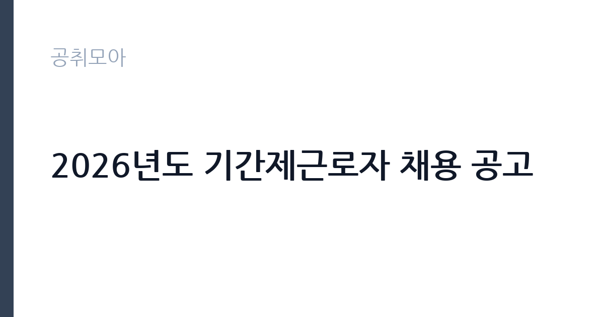

[공공기관] 2026년도 기간제근로자 채용 공고
한국중부발전(주) · 인천 · 마감 2026-11-19 (D-16) · 출처 잡알리오

한눈에 보는 모집 조건
| 기관 | 한국중부발전(주) |
|---|---|
| 공고명 | 2026년도 기간제근로자 채용 공고 |
| 고용형태 | 기간제 |
| 근무지 | 인천 |
| 게시일 | 2026-11-04 |
| 마감일 | 2026-11-19 (D-16) |
지원자격, 이렇게 읽으세요
- 기타: 우리 회사 인사관리규정 제10조의 결격사유가 없는 자, 최종합격자 발표 이후 즉시 근무 가능한 자
- 분야별 필수자격(모든 자격요건은 채용공고 마감일 기준)
- 복합발전소 운전업무 실무경력 보유자
기간제 근로자는 근로계약 기간이 정해진 신분입니다. 계약 기간과 갱신 가능 여부가 근로계약서에 명시되며 기간 만료 시 근로관계가 종료됩니다. 결원 보충이나 특정 사업 기간에 맞춰 채용되는 경우가 많아 업무 범위가 명확합니다. 이번 공고는 한국중부발전(주)에서 직접 진행하는 자체 전형으로, 응시자격과 제출서류는 공고문에 항목별로 제시됩니다. 공통 자격은 연령·성별·학력·전공 제한이 없고, 남자는 군필이거나 면제여야 하며, 현역은 입사 예정일 이전 전역이 가능해야 합니다. 회사 인사관리규정 제10조의 결격사유가 없어야 하고, 최종합격자 발표 이후 즉시 근무할 수 있어야 합니다. 분야별 필수자격은 공고문에 따로 적혀 있습니다. 발전기술원은 복합발전소 운전 업무 실무경력 보유자가 대상이라 신규 입문자는 지원할 수 없습니다. 고압가스안전관리원은 가스기능사 이상 자격증 소지자이거나, 가스안전교육원의 일반시설 안전관리 양성교육 14일 과정을 이수해 평가에 합격한 자여야 합니다. 모든 자격은 채용공고 마감일 기준으로 판단합니다. 서류는 접수 마감 이후 보완이 되지 않으므로 자격 요건과 증빙 서류를 마감 전에 모두 갖춰야 합니다. 공고문에 명시된 우대 사항은 해당 여부를 확인해 증빙을 첨부해야 가점이 반영됩니다. 공고문의 응시자격 표를 보면 자격 항목이 여러 줄로 나뉘어 있으므로, 각 줄을 하나씩 체크하며 본인 해당 여부를 표시해 두면 누락을 줄일 수 있습니다. 이 공고 원문에 적힌 응시 조건 문구는 '연령, 성별, 학력, 전공: 제한없음' / '분야별 필수자격(모든 자격요건은 채용공고 마감일 기준)' / '복합발전소 운전업무 실무경력 보유자'입니다. 문구를 그대로 읽고 본인 해당 여부를 하나씩 표시해 두면 서류 단계에서 탈락하는 일을 줄일 수 있습니다.
이 공고의 포인트
이 공고의 첫 번째 포인트는 고용 형태입니다. 계약 기간이 정해져 있어 근무 종료 시점이 명확합니다. 그만큼 짧은 기간에 어떤 실적을 남길지가 중요해집니다. 두 번째는 업무 범위가 명확하다는 점입니다. 발전설비 운전·가스안전관리(기간제) 직무로 채용되므로 배치 이후 담당 업무가 크게 흔들리지 않습니다. 세 번째는 근무지입니다. 인천 지역 근무로 접근성은 좋지만 그만큼 지원자가 몰리는 지역이므로 경쟁률을 넉넉히 잡아야 합니다. 공고가 올라온 지 얼마 되지 않아 아직 지원자 수가 많지 않을 가능성이 있습니다. 같은 직무로 함께 올라온 공고 가운데 접수 마감이 가장 늦은 편이라 준비 시간을 상대적으로 확보할 수 있습니다. 선발 인원은 공고문에 명시되어 있으니 모집분야 항목을 함께 확인하십시오.
전형은 어떻게 진행되나
채용 절차는 공고문에 안내된 순서대로 진행되며, 서류 접수 마감 후에는 추가 접수나 서류 보완이 이뤄지지 않는 것이 원칙입니다. 서류심사에서는 응시자격과 제출서류의 형식 요건을 기계적으로 확인하므로, 경력 증명서의 기간과 직무 내용이 공고의 요건과 정확히 맞아야 합니다. 면접은 지원자 수에 따라 집단면접과 개별면접으로 나뉘고, 직무 관련 질문과 상황 대응 질문이 함께 나옵니다. 합격자 발표는 개별 통보 또는 홈페이지 게시로 이뤄지며 이후 임용 절차가 진행됩니다. 서류 단계에서 요건을 충족하지 못하면 이후 전형을 준비할 기회가 없으므로, 제출 전 요건 대조를 한 번 더 하는 것이 좋습니다.
원문에서 확인한 전형 방식
□ 기간제 근로자 1. 공통자격 가. 연령, 성별, 학력, 전공: 제한없음 나. 병역: (남자의 경우) 군필 또는 면제자, 현역의 경우 입사 예정일 이전 전역 가능한 자 다. 기타: 우리 회사 인사관리규정 제10조의 결격사유가 없는 자, 최종합격자 발표 이후 즉시 근무 가능한 자 2. 분야별 필수자격(모든 자격요건은 채용공고 마감일 기준) 가. 발전기술원 - 복합발전소 운전업무 실무경력 보유자 나. 고압가스안전관리원: 아래 요건 중 1개 이상 갖춘 자 - 가스기능사 이상 자격증 소지자 - 가스안전교육원 일반시설 안전관리 양성교육(14일) 이수자(교육과정의 평가에 합격한 가스안전관리자격증 소지자)
이런 분께 추천해요
- 복합발전소 운전 실무경력이 있는 분
- 가스기능사 이상 자격이나 가스안전교육 이수증이 있는 분
- 교대·당직 근무를 수용할 수 있는 분
지원 전 체크리스트
- 응시자격 요건과 경력 기준을 충족하는가 — 경력은 증명서로 입증해야 합니다
- 계약 기간과 근무 시작일·종료일을 확인했는가
- 제출서류 목록을 모두 준비했는가 — 누락 시 서류 단계에서 탈락합니다
- 접수 마감 2026-11-19 이전에 접수 방식을 확인해 제출했는가
모집 일정과 제출 타이밍
접수 마감은 2026-11-19이고 공고는 2026-11-04에 게시되었습니다. 준비 기간 15일 안에 서류 작성, 증빙 발급, 접수를 모두 마쳐야 하므로 주말을 포함해 일정을 미리 나누는 것이 좋습니다. 특히 경력 기술서나 직무수행계획서를 요구하는 공고는 작성에 시간이 걸리므로 첫날 초안을 잡으십시오. 서류 합격자 발표와 면접 사이 간격이 짧은 경우가 많아 면접 예상 질문은 서류 제출 전에 정리해 두는 편이 유리합니다. 마감 직전에는 접속이 몰리므로 여유를 두고 제출하십시오. 공휴일이 끼어 있으면 증명서 발급이 늦어질 수 있으니 발급 일정을 앞당기십시오. 인천 근무지는 지역 내 이동 거리가 길어 출퇴근 시간이 생각보다 많이 걸릴 수 있습니다. 마감까지 여유가 있어 자격 요건을 천천히 확인하고 준비할 수 있습니다. 선발 인원은 공고문의 모집분야 항목에 직종별로 제시되어 있습니다.
직무 이해하기: 공공기관
이번 채용은 인천발전본부에서 일할 기간제 근로자를 분야별로 나눠 뽑습니다. 발전기술원은 LNG 복합발전소의 운전 업무를 맡아 발전기와 증기터빈의 운전 상태를 감시하고, 기동·정지 절차에 따라 설비를 조작합니다. 계통 지시에 맞춰 출력을 조정하고, 이상 징후가 감지되면 즉시 보고한 뒤 정비 부서와 함께 원인을 확인합니다. 고압가스안전관리원은 도시가스와 고압가스 설비의 안전 관리와 점검을 맡고, 가스 누출이나 설비 이상에 대응합니다. 두 분야 모두 교대 근무와 당직이 포함되고, 발전소 안전 규정과 작업 허가 절차를 지키는 것이 업무의 전제입니다. 업무 강도와 근무 시간대는 부서 배치에 따라 달라지므로 면접에서 확인하는 것이 가장 정확합니다.
자기소개서 작성 팁
지원서는 지원 분야를 첫 문단에서 밝히고 그 분야의 실무 경력을 설비 단위로 정리하는 것이 효과적입니다. 운전 경력이 있다면 담당한 설비 용량과 운전 기간, 처리한 이상 상황을 수치와 함께 쓰십시오. 가스 안전 분야는 자격 취득 시점과 점검 실적, 교육 이수 내역이 핵심 소재입니다. 발전소는 안전과 절차 준수를 가장 중요하게 보므로, 규정을 지켜 일을 마무리한 경험을 한 문단 넣으면 신뢰를 얻습니다. 문항별 글자 수 제한을 먼저 확인하고, 각 문항의 첫 문장에 결론을 배치하는 방식이 읽기 쉽습니다. 지원 동기는 기관의 어떤 사업에 기여하겠다는 한 문장으로 시작하고, 이어서 본인의 경험을 근거로 붙이십시오. 감점을 피하려면 다른 기관에 보낼 수 있는 범용 문장을 그대로 쓰지 않는 것이 중요합니다. 기관 이름과 사업명이 문장 안에 자연스럽게 들어가야 준비도가 드러납니다.
면접 준비 포인트
면접에서는 분야별 실무를 확인합니다. 발전기술원 지원자는 운전해 본 설비의 종류와 용량, 기동·정지 시 확인하는 항목, 이상 징후를 발견했을 때의 보고 순서를 구체적으로 답해야 합니다. 고압가스안전관리원 지원자는 취급해 본 가스 설비와 점검 주기, 누출 의심 상황에서의 조치 절차를 정리해 두십시오. 두 분야 모두 교대 근무와 당직을 감당할 수 있는지, 안전 규정을 어겼을 때 어떻게 판단할지 묻는 질문이 나옵니다. 답변은 상황, 판단, 조치의 순서로 정리하면 전달이 분명해집니다. 모르는 질문에는 모른다고 밝히고 확인 방법을 제시하는 편이 억지 답변보다 낫습니다. 마지막에는 근무 의사와 함께 2026-11-19 이후 일정에 언제든 응할 수 있다는 점을 전달하십시오. 면접은 공고문에 적힌 직무 내용을 얼마나 이해하고 있는지 확인하는 질문으로 시작하는 경우가 많으니, 모집분야 문구를 그대로 읽어 두는 것이 도움이 됩니다.
급여·근무조건 읽는 법
이번 채용은 기간제 근로자로, 보수는 중부발전의 기간제 임금 기준과 분야·경력에 따라 정해집니다. 공기업 정규직 평균보수는 정규 신분 기준 값이라 그대로 적용되지 않으므로, 처우는 공고문의 보수 항목을 기준으로 확인해야 합니다. 교대 근무를 하면 야간·휴일 근무수당이 붙고, 발전소 특성상 초과근무가 발생할 수 있어 실수령액에 차이가 생깁니다. 2026년 적용 최저임금은 시급 10,320원, 월 환산 2,156,880원이므로 이보다 낮은 조건은 있을 수 없습니다. 계약 기간과 재계약 조건, 수당 항목을 함께 확인하십시오. 2026년 적용 최저임금은 시급 10,320원, 월 환산 2,156,880원(주 40시간·209시간 기준)입니다. 고용노동부 고시 제2025-47호로 확정된 금액입니다. 공고문에 금액이 제시되지 않은 항목은 원문 보수표나 처우 설명에서 확인해야 하며 확인되지 않은 수치는 쓰지 않는 것이 원칙입니다. 비교할 때는 월 급여뿐 아니라 상여·명절휴가비·복지포인트·초과근무수당까지 포함한 연간 총액으로 계산하십시오. 기간제라면 계약 기간 동안의 총액을, 무기계약이라면 호봉 상승과 정년까지의 누적 소득을 기준으로 판단하는 편이 정확합니다.
자주 묻는 질문
- 선발 인원은 몇 명인가요?
공고문의 모집분야 항목에 직종별 인원이 표로 제시되어 있습니다. 첨부된 공고문 원문에서 확인하십시오. - 근무지는 어디인가요?
인천 지역의 한국중부발전(주) 소속 근무지입니다. 세부 주소와 출퇴근 조건은 원문 공고문에서 확인할 수 있습니다. - 보수는 얼마인가요?
채용 신분(기간제)과 기관 임금 규정에 따라 정해지며 구체적인 금액은 공고문 처우 항목에 제시됩니다. 금액이 공개되지 않은 경우에는 원문의 보수표를 확인하십시오.
함께 보면 좋은 공고
[공공기관] 한전KDN(주) 경남사업처 배전자동화 성능관리분야 비정규직 모집공고 — 마감 2026-11-18[공공기관] 한국폴리텍대학 남대구캠퍼스 업무직(대학운영직_조리사) 채용(2차) 공고 — 마감 2026-11-11[공공기관] 한국폴리텍대학 남대구캠퍼스 행정지원직원(휴직대체_학사지원직) 채용 공고 — 마감 2026-11-11출처: 잡알리오 공개정보를 바탕으로 공취모아가 정리한 안내글입니다. 모집 조건·일정은 변경될 수 있으니 지원 전 반드시 원문 공고문을 확인하세요. 본 글은 정보 제공용이며 합격을 보장하지 않습니다.